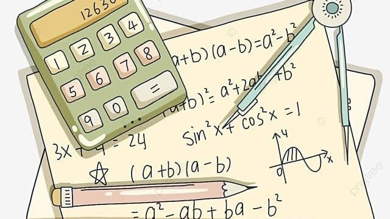

Las matemáticas tienen el poder de transformar lo complejo en algo comprensible. Están en la música, en la arquitectura, en la naturaleza y hasta en nuestro día a día. Lo sorprendente es cómo una fórmula puede explicar el movimiento de un planeta o cómo una ecuación puede predecir situaciones reales. Esa capacidad de conectar ideas abstractas con el mundo real es lo que hace que las matemáticas sean tan fascinantes.
Detrás de cada invento, descubrimiento o avance científico, hay una base matemática. Esta disciplina no solo nos enseña a calcular, sino también a razonar, analizar y tomar decisiones. Las matemáticas despiertan la curiosidad y nos invitan a explorar el “por qué” de las cosas. Su magia está en que, sin importar el idioma o la cultura, sus verdades siempre son las mismas.
Las matemáticas revelan el orden oculto del universo y nos invitan a pensar con claridad y creatividad